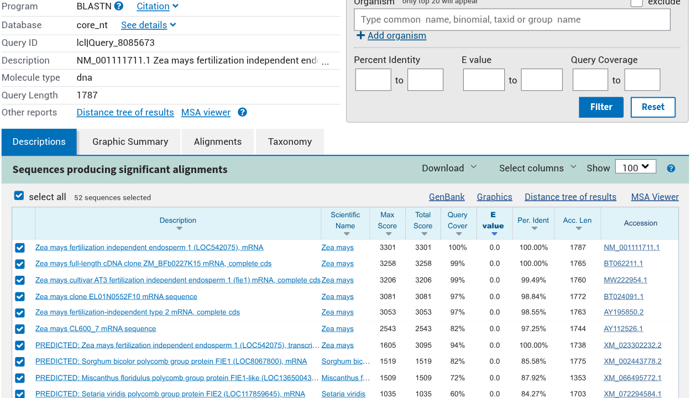
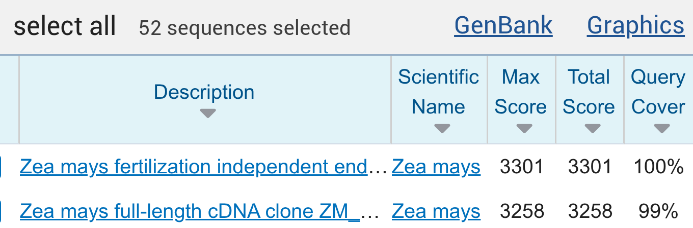
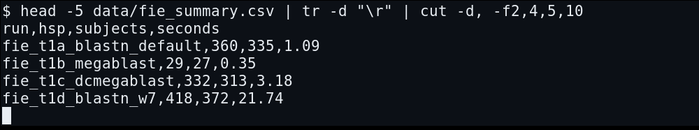
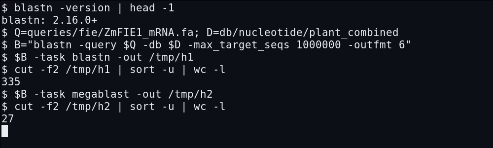
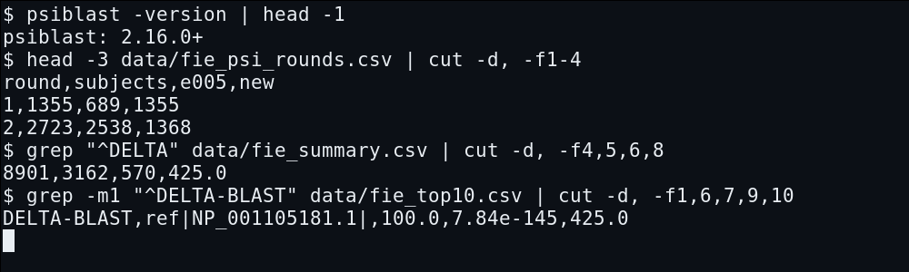
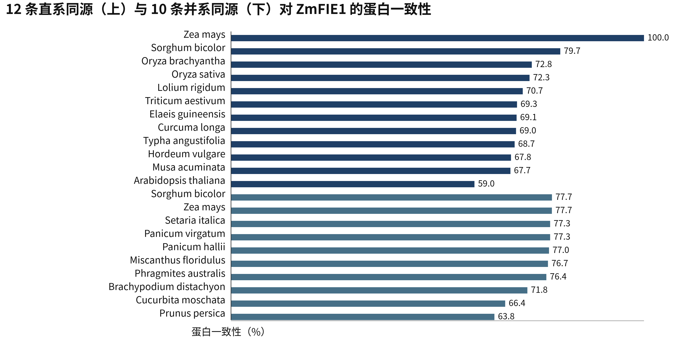

姓名：曹荣麟 班级：生技 2402 学号：2024014209
实验掌握情况：基本没有太大问题
你的疑问（最多 3 条）：见讨论区
研究分子沿用实验二的玉米 ZmFIE1：RefSeq mRNA NM_001111711.1（1,787 nt）、蛋白 NP_001105181.1（461 aa，UniProt Q8VZY7），4 号染色体负链，PRC2 的 WD40 亚基。实验二整理的拟南芥与禾本科 FIE 家族候选，其直系或并系关系仍待验证。
本实验以序列相似性为依据，同一 query、同一库，比较 BLASTN 算法与参数、BLASTP 全长与短片段、PSI-BLAST 逐轮漂移、DELTA-BLAST profile 搜索和 BLASTX/TBLASTX 翻译搜索。本地 BLAST+ 2.16.0 装于 tools/deb/；核酸库为 11 个植物物种 Ensembl Plants release-62 cDNA 加 FIE 家族 RefSeq mRNA（652,197 条），蛋白库为 UniProt Swiss-Prot 加 FIE 家族 RefSeq 蛋白（576,022 条）；-max_target_seqs 分别为核酸扫描 1,000,000、蛋白及翻译搜索 20,000、PSI/DELTA 50,000。
材料：query NM_001111711.1（1,787 nt）；核酸库 652,197 条。
方法：固定 query 与库，只改一个变量：算法（blastn / dc-megablast / megablast）、word size（7/11/15）、E-value（1e-50/1e-5/10/1000），共 9 次；命中数按去重后的 subject 计，同一序列的多个 HSP 只留最高分。
| 参数 | blastn | dc-megablast | megablast |
|---|---|---|---|
| word size | 11 | 11 | 28 |
| 替换打分 | 2 / −3 | 2 / −3 | 1 / −2 |
| gap open / extend | 5 / 2 | 5 / 2 | 0 / 0 |
| E-value | 10 | 10 | 10 |
| 设计目标 | 中等相似度的较长匹配 | 跨物种远缘同源 | 高相似序列的快速搜索 |
物种列为标题解析的名称标签数，含 unknown 类别，非严格去重的物种数。
| 变量 | 取值 | 命中 | 物种标签 | 耗时 | E<0.005 |
|---|---|---|---|---|---|
| 算法 | blastn | 335 | 153 | 1.09 s | 313 |
| 算法 | dc-megablast | 313 | 153 | 3.18 s | 312 |
| 算法 | megablast | 27 | 10 | 0.35 s | 27 |
| word size | 7 | 372 | 153 | 21.74 s | 315 |
| word size | 11（默认） | 335 | 153 | 1.07 s | 313 |
| word size | 15 | 242 | 153 | 0.63 s | 227 |
| E-value | 1e-50 | 297 | 153 | 1.06 s | 297 |
| E-value | 1e-5 | 313 | 153 | 1.06 s | 313 |
| E-value | 1000 | 2,083 | 153 | 1.48 s | 313 |
结果分析
XM_066470013.1 换为 Panicum hallii XM_025965193.1）。前 10 条均为禾本科 FIE1/FIE2，含玉米 NM_001111711.1（100%）、高粱 XM_002443778.2（84.8%）；高排名较一致，低排名有差异。网页版复核。 NCBI BLAST 网页版对同一 query 检索：blastn、优化项 megablast（word size 28、match/mismatch 1/−2）、库 core_nt、Entrez 限定 Viridiplantae[Organism]，RID EVDGFU20016（2026-11-06），返回 52 条命中。前 5 条依次为 NM_001111711.1（100%）、BT062211.1（100%）、MW222954.1（99.49%）、BT024091.1（98.84%）、AY195850.2（98.55%）。图 1 为网页版结果页截图，图 2 由同一结果页裁取列表上部；图 3 至图 5 在隔离 Linux 终端中实际执行本地命令后截屏，公共参数用 shell 变量复用、长进度行已折叠。网页版与本地库组成不同，命中数不能直接比较；序列相似性不足以确定直系或并系关系。




材料：query NP_001105181.1（461 aa）；27 aa 片段取自第 143–169 位，覆盖第一个 WD40 重复。蛋白库 576,022 条。
方法：全长蛋白跑默认参数，再改 word size（2/6）、矩阵（BLOSUM45/90）、E-value（1e-3/1000）；短片段用 blastp-short，比较默认与 -word_size 2/3。XML 报告读出的默认参数：blastp 为 word 3、BLOSUM62、gap 11/1、E=10；blastp-short 为 word 2、PAM30、gap 9/1、E=20000。
| 变量 | 取值 | 命中 | 物种标签 | E<0.005 | 最高 bitscore |
|---|---|---|---|---|---|
| 默认 | word 3 / BLOSUM62 / E=10 | 1,355 | 314 | 689 | 955 |
| word size | 2 | 1,363 | 315 | 694 | 955 |
| word size | 6 | 809 | 269 | 522 | 955 |
| 矩阵 | BLOSUM45 | 1,287 | 292 | 698 | 956 |
| 矩阵 | BLOSUM90 | 1,180 | 293 | 705 | 1,004 |
| E-value | 1e-3 | 604 | 244 | 604 | 955 |
| E-value | 1000 | 2,482 | 662 | 690 | 955 |
默认搜索前 10 条依次为 NP_001105181.1（query 自身，100%，955 bits）、UniProt Q8VZY7（同一蛋白，100%，955 bits）、玉米 isoform XP_023158000.1（93.0%，834 bits）、高粱 FIE1 XP_002443823.1（79.7%，753 bits）、Setaria viridis FIE2 XP_072150685.1（71.8%，650 bits）及 5 条 77% 左右的 FIE2 候选。第 5 位一致性较低但比对更长（429 aa 对 374 aa），bitscore 反而更高；前十含 3 条同一物种的不同条目，不能当作独立直系同源。1,355 条命中里仅 209 条标题明确为 FIE1/FIE2（114 个名称标签），其余 1,146 条未标注 FIE；314 个名称标签不能视为 FIE 物种分布。以上均为待基因树验证的 FIE1/FIE2 候选。参数改动主要影响长尾命中数，高排名成员多数不变但排序改变（表 3）。
| 任务 | word / 矩阵 / gap / E | 命中 | 物种标签 | E<0.005 | 最高 bitscore |
|---|---|---|---|---|---|
| blastp-short 默认 | 2 / PAM30 / 9-1 / 20000 | 11,393 | 2,220 | 139 | 71.0 |
| blastp-short word 2 | 2 / PAM30 / 9-1 / 20000 | 11,393 | 2,220 | 139 | 71.0 |
| blastp-short word 3 | 3 / PAM30 / 9-1 / 20000 | 3,052 | 1,172 | 139 | 71.0 |
短序列用较短种子与 PAM30 适配短比对；显著性仍需结合比对长度与搜索空间解释。默认 blastp-short 首位为 Setaria viridis FIE2 XP_072150685.1（85.2%，71 bits），玉米自身 100% 的该片段列第 2（57.9 bits）；关闭组成校正（-comp_based_stats 0）后玉米回到第 1（88.0 bits，E=5.59e-21），Setaria 降至第 4，短序列排名对组成假设敏感。
材料：query NP_001105181.1；蛋白库 576,022 条；DELTA-BLAST 用 CDD cdd_delta。
PSI-BLAST：BLAST+ 2.16 既不接受 -save_psiblast_after_each_round，-num_iterations 1 也不写 PSSM 检查点，故每次从第 1 轮重跑到第 N 轮，取最后一轮，连跑 12 轮。
| 轮次 | 累计序列 | 本轮新增 | E<0.005 | 本轮新增中最好 |
|---|---|---|---|---|
| 1 | 1,355 | 1,355 | 689 | 玉米 FIE1 自身，955 bits，E=0 |
| 2 | 2,723 | 1,368 | 2,538 | 蓝藻 WD40 Q55563，13.9%，164 bits，E=2.48e-42 |
| 3 | 3,112 | 389 | 2,771 | 大鼠 IFT172 Q9JKU3，11.1%，77.4 bits，E=1.29e-13 |
| 4 | 3,359 | 247 | 2,951 | 黄单胞菌 TolB Q5H299，14.9%，57.4 bits，E=1.14e-07 |
| 8 | 3,768 | 18 | 3,340 | 猩猩 GEF Q5R5M3，43.7 bits，E=3e-3 |
| 12 | 3,810 | 2 | 3,383 | 盘基网柄菌 RhoGAP，33.8 bits，E=4.0 |
第 1 轮 1,355 条中 689 条 E<0.005；首条是 query 自身 NP_001105181.1（955 bits，E=0），第二、三条为 UniProt Q8VZY7 与玉米 isoform XP_023158000.1（93.0%）。689 条显著命中已含全部 209 条 FIE1/FIE2，其余是其它 WD40 蛋白。第 2 轮首条仍是 query 自身（955 bits，E=0），与第一轮相同；新增 1,368 条里最高分是蓝藻 Q55563（未表征 WD40，13.9%，164 bits，E=2.48e-42），紧随拟南芥 RACK1B、盘基网柄菌 tipD、酵母 MDV1、人 TEP1 等，均非已确认的 FIE 家族成员，可能只是共享 WD40 结构域的局部相似。第 3 轮最高为大鼠 IFT172（11.1%），第 4 轮起 TolB、Tol-Pal 亦被检出，identity 10–15%。12 轮未收敛：新增从 1,368 降到 2 但始终不为 0，累计 3,810 条、E<0.005 3,383 条；收紧 -inclusion_ethresh 或限定分类范围可评估变化，但不保证收敛。
假阳性判断。 以 FIE 家族同源序列为目标，结果中存在假阳性：第 1 轮 689 条显著命中里仅 209 条标题为 FIE1/FIE2，其余是 RACK1、MDV1 等其它 WD40 蛋白；第 2 轮起又新增蓝藻 WD40（13.9%）、大鼠 IFT172（11.1%）、细菌 TolB（14.9%）等低一致性、跨域命中。它们与 FIE 共享 WD40 重复，属结构域层面的局部相似，不是直系或并系同源；PSSM 纳入后会继续把同类蛋白拉入结果，这也是未收敛的可能原因。仅凭 E 值和 bitscore 不能排除，需结合覆盖度、结构域架构与基因树鉴别。
DELTA-BLAST：5.02 s，命中 3,162 条、8,901 个 HSP、570 个名称标签（含 unknown 25 个）。第一条是 query 自身的自身比对而非直系或并系同源，425 bits、E=7.84e-145；第二条为 UniProt Q8VZY7，第三条玉米 isoform（93.0%，376 bits，E=1.93e-126），第四、五条为高粱 FIE1（79.7%，343 bits）和 Setaria FIE2（70.8%，295 bits）。第 6、7 位是蓝藻 Q8YRI1（18.2%）和 Podospora HET-E-1（17.3%），275/266 bits，比水稻 FIE1（第 8 位，60.9%，257 bits）还高。名称标签覆盖动物、真菌、植物与原生生物，最多依次为人 282、小鼠 263、拟南芥 159、裂殖酵母 126、酿酒酵母 110、大鼠 99、盘基网柄菌 95、非洲爪蟾 85；其中多数是其它 WD40 蛋白，属 CDD 结构域 profile 的跨物种相似，不能当作 FIE 的物种分布。图 5 为上述结果文件的终端核查记录。

材料：query NM_001111711.1；库为蛋白库与 FIE 家族 mRNA 小库（280 条）。
| 搜索 | query → 库 | 命中 | HSP | 物种标签 | 耗时 | 前 10 与直接搜索 |
|---|---|---|---|---|---|---|
| BLASTX | mRNA → 蛋白库 | 1,234 | 1,960 | 292 | 4.76 s | 与 BLASTP 重 9/10 |
| TBLASTX | mRNA → FIE mRNA 库 | 280 | 4,129 | 154 | 0.19 s | 与 BLASTN 重 7/10 |
| BLASTN | mRNA → FIE mRNA 库 | 22 | 23 | 10 | 0.06 s | — |
BLASTX 前 10 条与 BLASTP 重 9 条，首位为玉米 FIE1（851 bits，430 aa 对齐），“先翻译再比”与蛋白搜索基本等价。TBLASTX 检出 280 条家族 mRNA、BLASTN 检出 22 条；一条序列可对应多个 HSP。
保存的序列：
| 文件 | 内容 | 条数 | 与 query 的 identity |
|---|---|---|---|
sequences/fie_orthologs_10.fasta |
FIE1 候选（含 query 自身） | 10 | 100% → 59.0% |
sequences/fie_paralogs_10.fasta |
FIE2 并系候选 | 10 | 77.7% → 63.8% |
sequences/fie_delta_layers.fasta |
DELTA-BLAST 分层抽样 | 21 | 100% → 32.7% |
FIE1 文件含 query 自身，除自身外仅 9 条候选，尚不能视为 10 条经验证的独立直系同源序列。分层抽样按任务书从高到低取，但本地 FIE 家族在 80–90% 区间没有独立命中，40–50% 与 30–40% 各只有 1 条，实际保存 21 条、18 个物种；明细见 fie_delta_layers.tsv。候选多数无配对 mRNA 且含同一物种的不同 isoform，后续分析前须按登录号去重；名称标签数与命中排名不能当作独立同源序列计数。

拟南芥 FIE 的 identity 为 59.0%，高粱 FIE2 为 77.7%；identity 高低不能直接判断直系或并系关系，须结合基因树与注释验证。
BLAST 算法、word size、替换矩阵和 E-value 阈值影响灵敏度、耗时与结果；高排名序列也需结合覆盖度、注释及进化关系解释。PSI/DELTA 能检出远缘 WD40 蛋白，但须结合结构域与物种信息鉴别。
默认 blastp-short 把 Setaria FIE2（85%）排在玉米自身（100%）之前，关闭组成校正后才恢复。名称标签含 unknown 与重复，不能当作物种数。标题中的“FIE1-like”（水稻 466 aa、小麦 461 aa）暂依长度与相似性归 FIE2 支，仍需基因树验证。